관리자가 하는 일과 회원에게 보이는 화면 · 2026-10-19 기준
기간과 성공 기준(몇 번 인증하면 성공인지)을 정해요
회원이 신청하고, 관리자는 제품 운송장을 등록해요
회원이 매일 사진을 올려요. 이상한 사진은 반려해요
기준만큼 못 올린 회원을 한 번에 탈락시켜요
남은 회원 사진을 확인하고 '최종완료'를 누르면 결과가 정해져요. 발표는 검수기간이 끝난 뒤 한 번에
| 언제 | 어디서 · 무엇을 |
|---|---|
| 준비 | 챌린지 > 챌린지 일정에서 등록 제목, 이미지, 신청기간 · 진행기간 · 검수기간, 성공 인증 횟수(1 ~ 진행 일수, 입력칸 옆에 "최대 N회" 표시 · 넘으면 저장 안 됨), 실패한 회원에게 추천할 루틴 |
| 신청기간 | 챌린지 > 신청현황에서 신청자 확인 엑셀로 내려받아 운송장 번호를 채워 다시 올리거나, 목록에서 바로 입력 |
| 진행기간 | 챌린지 > 인증현황에서 사진 확인 문제 있는 사진만 체크해서 반려 (잘못 반려했으면 반려 취소) 여러 회원의 사진을 한꺼번에 체크해서 처리할 수도 있어요 |
| 진행기간 끝 | 횟수 부족 일괄 탈락 버튼 클릭 사진을 기준보다 적게 올린 회원(한 번도 안 올린 회원 포함)이 한 번에 탈락돼요 → 회원에게는 검수기간이 끝난 뒤 실패 결과 |
| 검수기간 | 남은 회원 사진을 확인하고 필요하면 반려 확인이 끝난 회원을 체크해 심사상태를 최종완료로 변경 → 결과가 자동으로 정해짐 (회원 발표는 검수기간이 끝난 다음 날 모든 회원 한 번에) |
※ '최종완료'와 '횟수 부족 일괄 탈락'은 진행기간이 끝나야 누를 수 있어요. 최종완료된 회원의 사진은 반려할 수 없어요(심사중으로 되돌린 뒤 처리).
| 결과 | 언제 이렇게 되나요 |
|---|---|
| 성공 | 반려되지 않은 사진이 성공 기준 이상 |
| 탈락(반려) | 올린 횟수는 충분했는데, 반려된 사진 때문에 기준에 못 미침 |
| 탈락(횟수 부족) | 올린 횟수 자체가 기준보다 적음 |
| 결과 대기 | 아직 결과가 정해지지 않음 (회원에게는 '결과 대기중') |
※ 성공 기준을 바꾼 뒤 결과를 다시 받고 싶으면, 심사상태를 '심사중'으로 바꿨다가 다시 '최종완료'로 바꾸면 돼요.
| 언제 | 회원이 보는 것 |
|---|---|
| 신청기간 전 | 상세에 카드 · 버튼 없음 (목록 카드는 눌리지 않음) |
| 신청기간 | "챌린지 신청하기" 버튼 (로그인 안 했으면 "로그인 후 신청하기") 이름 · 전화번호 · 주소 입력, 동의 3개 체크 후 신청 |
| 신청 후 ~ 시작 전 | "신청 완료" · "곧 시작돼요 D-n" |
| 진행기간 | "사진 등록하고 인증하기" → 하루 1장 업로드 오늘 올린 뒤 다시 들어오면 오늘 사진이 보이고, 그날에만 다시 골라 바꿀 수 있어요 (버튼은 항상 "인증하기") 도장판에 인증한 날 · 놓친 날 · 오늘이 표시돼요 |
| 검수기간 | "결과 대기중이에요" (사진은 더 올릴 수 없어요) 관리자가 결과를 정해도 검수기간 동안은 이 화면 그대로 |
| 검수기간 끝 (결과 발표) | 모든 회원에게 한 번에 — 성공 → "챌린지 성공했어요!" + 리워드 안내 탈락 → "완주하지 못했어요" + 추천 루틴 두 화면 모두 "내 기록 보기"로 도장판 확인 (사진 왼쪽 위 도장 : 승인 웃는 얼굴 / 반려 · 안 올린 날 우는 얼굴) |
| 검수기간 끝 · 결과 없음 | "종료된 챌린지 · 다음에 다시 돌아올게요" (신청 안 한 회원 · 결과가 정해지지 않은 회원) |
※ 승인 · 반려 도장이 보이는 내 기록은 결과 발표 뒤에만 열려요 : 나의 챌린지 결과발표 카드 또는 사진 인증 주소 → 결과 화면(성공 / 실패) → 내 기록 보기
. 발표 전에는 "아직 결과가 발표되지 않았어요." 안내 후 인증하기 화면으로 가요.
※ 마이페이지 '나의 챌린지'에는 진행중 / 진행예정 / 결과대기중(검수기간) / 결과발표(검수기간이 끝나고 결과가 있음) / 종료(결과 없음) 중 하나가 표시돼요.
아래는 지금 사이트의 실제 회원 화면이에요 (2026-10-19, 테스트 데이터로 캡처 후 데이터 삭제). 사진을 누르면 크게 볼 수 있어요.
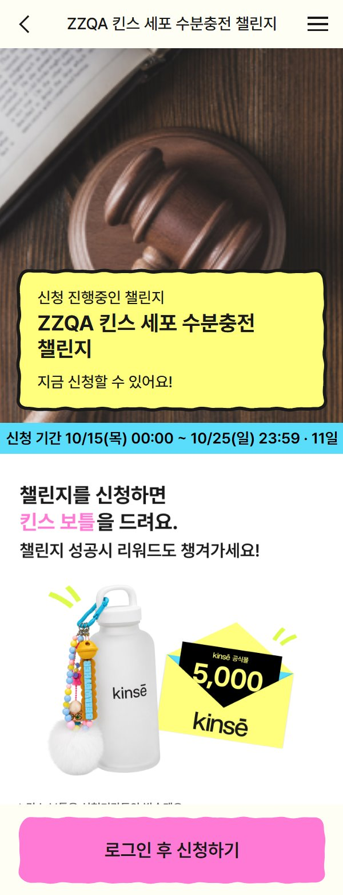
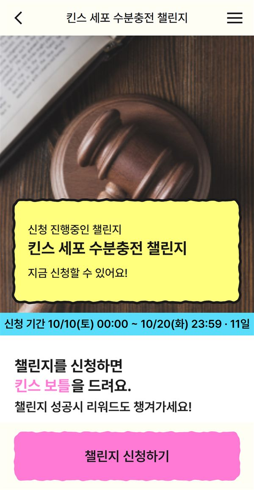
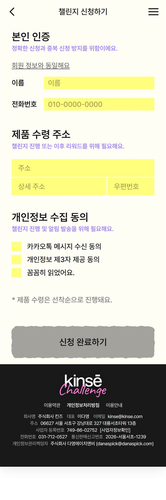
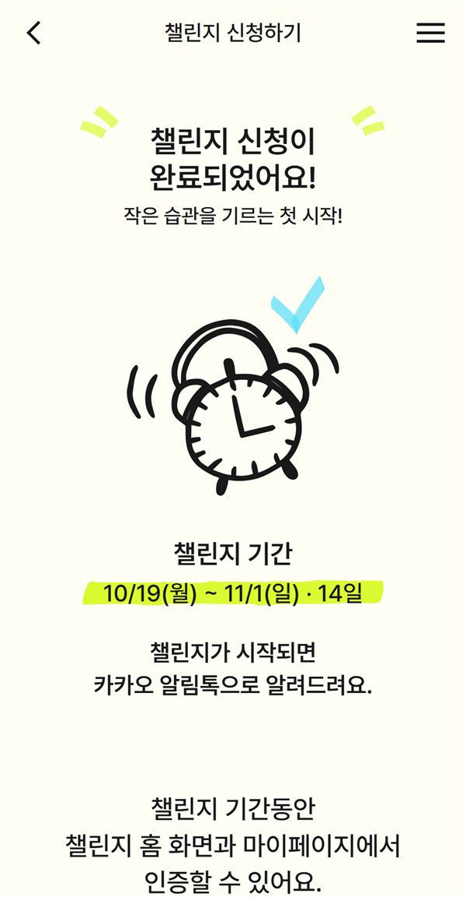
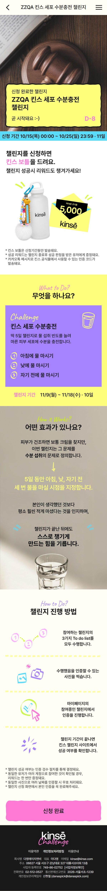
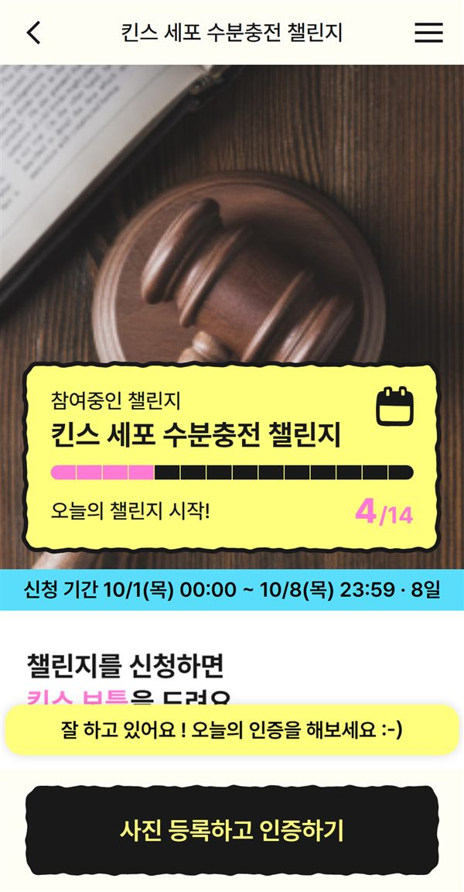
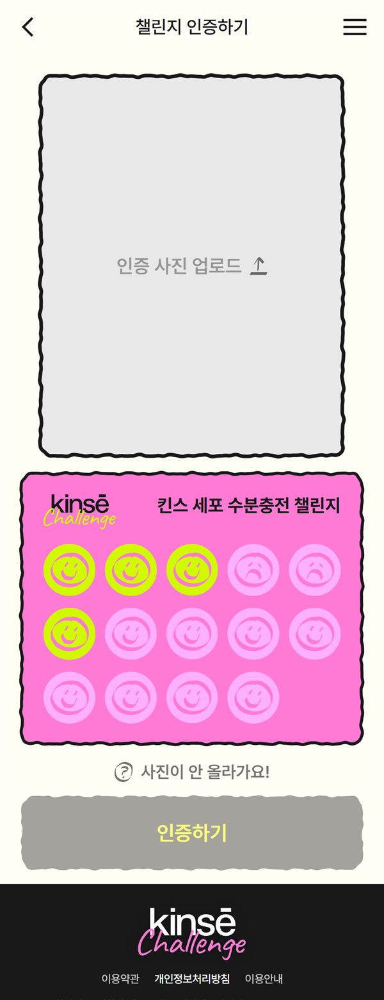
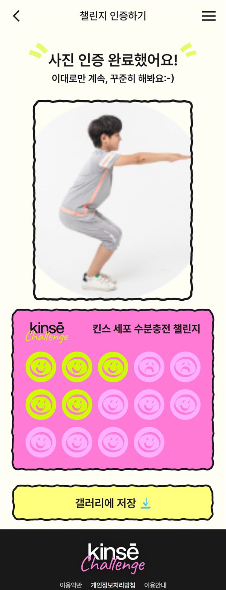
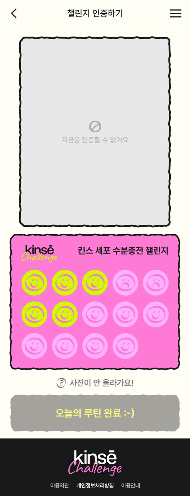
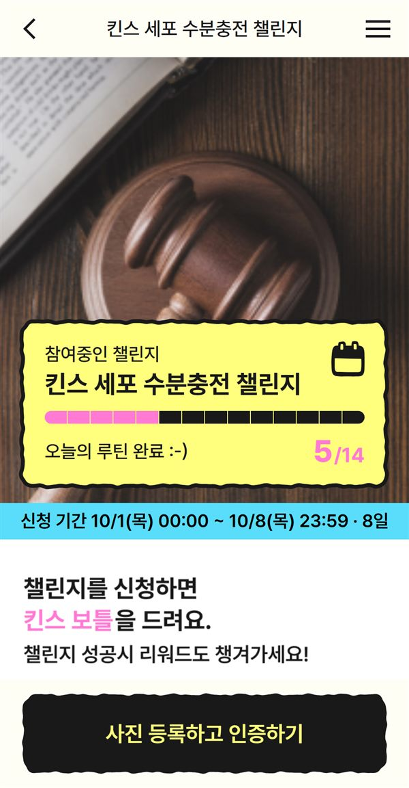
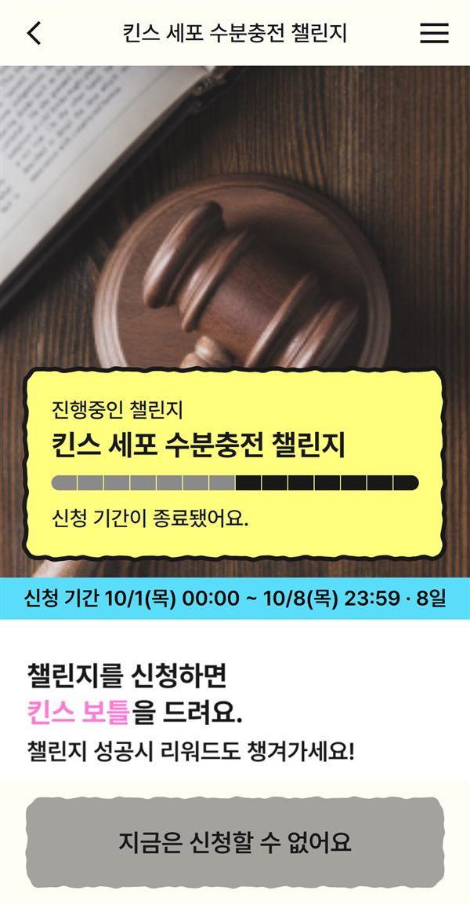
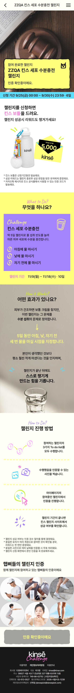
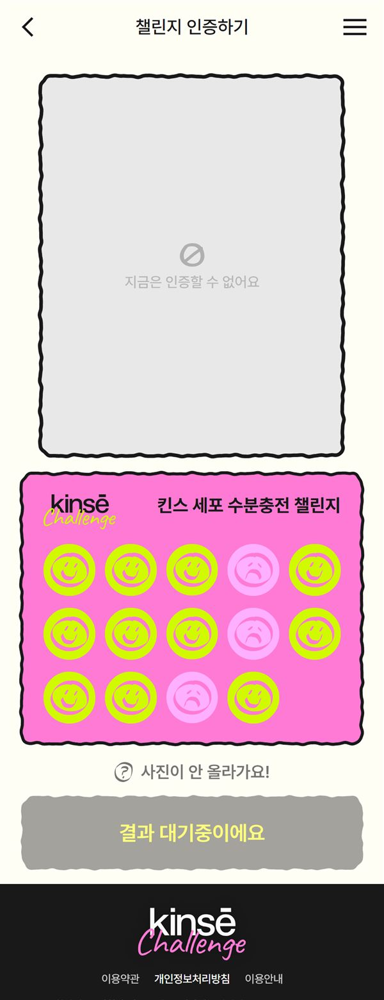
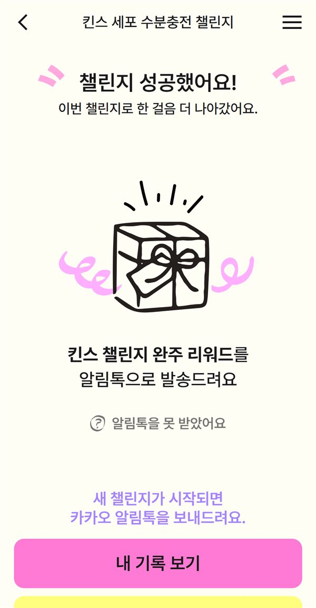
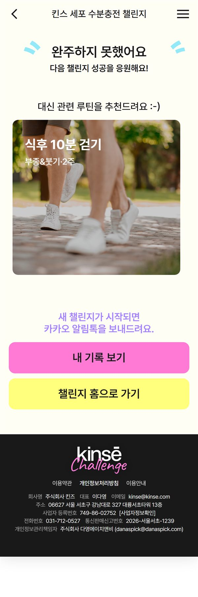
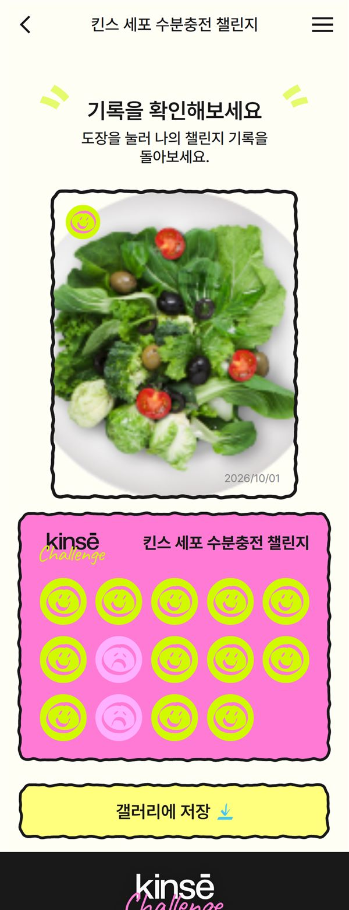
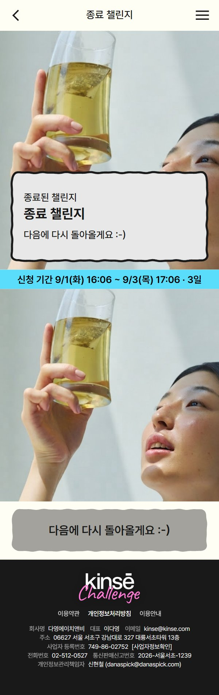
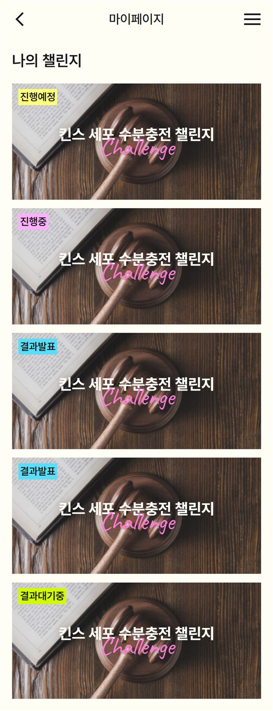